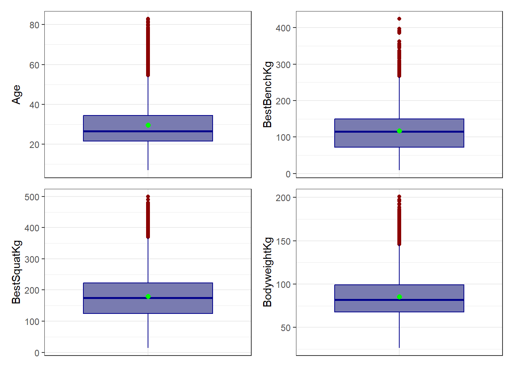

7 Variables independientes (caracteristicas)
df %>%
select(where(is.numeric),-BestDeadliftKg,-playerId) %>%
pivot_longer(
cols=everything(), #llaves y valores para cambiar la posicion del encabezado
names_to='variable',
values_to='valor'
) %>%
group_by(variable) %>%
summarise(n=length(valor),
media=mean(valor),
sd=sd(valor),
mediana=median(valor),
RIC=IQR(valor),
Q1=quantile(valor,0.25),
Q3=quantile(valor,0.75),
minimo=min(valor),
maximo=max(valor),
asim=skewness(valor),
curtosis=kurtosis(valor)) %>%
kable(caption = "Caracterización") %>%
kable_styling(bootstrap_options = c("striped", "hover", "condensed"),
full_width = TRUE) %>%
scroll_box(width = "100%")| variable | n | media | sd | mediana | RIC | Q1 | Q3 | minimo | maximo | asim | curtosis |
|---|---|---|---|---|---|---|---|---|---|---|---|
| Age | 18900 | 29.66470 | 11.50345 | 26.5 | 13.00 | 21.5 | 34.50 | 7.00 | 83 | 1.3295986 | 4.742084 |
| BestBenchKg | 18900 | 116.96339 | 51.23165 | 115.0 | 77.50 | 72.5 | 150.00 | 9.10 | 425 | 0.6450795 | 3.615781 |
| BestSquatKg | 18900 | 179.16597 | 69.09070 | 175.0 | 97.50 | 125.0 | 222.50 | 13.60 | 500 | 0.6052807 | 3.463130 |
| BodyweightKg | 18900 | 85.42556 | 22.95972 | 82.1 | 31.27 | 67.7 | 98.97 | 26.13 | 201 | 0.7953441 | 3.876567 |
7.0.1 Veamos el análisis de cada variable independiente
Age (Edad)
Media = 29.66 años | Mediana = 26.5 años. La media está claramente por encima de la mediana, y con una asimetría alta (1.33) y curtosis elevada (4.74), esto indica una distribución bastante asimétrica hacia la derecha: la mayoría de competidores son jóvenes (20-30 años), pero hay una cola de atletas de mayor edad (hasta 83 años) que estira la media hacia arriba.
BestBenchKg (Press banca)
Media = 116.96 kg | Mediana = 115 kg, muy cercanas entre sí. Asimetría moderada (0.645) indica un sesgo positivo leve-moderado: la mayoría levanta entre 72.5 y 150 kg (RIC), con una cola hacia valores altos (hasta 425 kg). Curtosis cercana a 3 (3.62) sugiere una forma similar a la normal.
BestSquatKg (Sentadilla)
Media = 179.17 kg | Mediana = 175.0 kg, también cercanas. Asimetría moderada (0.605), similar al press banca: sesgo positivo leve, con la mayoría entre 125 y 222.5 kg y una cola hacia valores altos (hasta 500 kg). Curtosis (3.46) muy cercana a la normal.
BodyweightKg (Peso corporal)
Media = 85.43 kg | Mediana = 82.1 kg. Asimetría moderada-alta (0.795) muestra un sesgo positivo más marcado que en las otras variables: hay competidores con pesos corporales notablemente altos (hasta 201 kg, categoría superpesado) que estiran la distribución hacia la derecha. Curtosis (3.88) indica una distribución levemente más apuntada que la normal (leptocúrtica).
7.1 Graficos de las variables independientes
# 'Age'
df %>%
ggplot(aes(x =" ",y = Age))+
geom_boxplot(fill="#797bb0",color="darkblue",
outlier.color='darkred')+
stat_summary(fun=mean, geom='point', shape=20,
size=3, color='green')+
theme_bw()+
theme(axis.title.x = element_blank(),
axis.text.x = element_blank(),
axis.ticks.x = element_blank())->p1
# 'BestBenchKg'
df %>%
ggplot(aes(x =" ",y = BestBenchKg ))+
geom_boxplot(fill="#797bb0",color="darkblue",
outlier.color='darkred')+
stat_summary(fun=mean, geom='point', shape=20,
size=3, color='green')+
theme_bw()+
theme(axis.title.x = element_blank(),
axis.text.x = element_blank(),
axis.ticks.x = element_blank())->p2
# 'BestSquatKg'
df %>%
ggplot(aes(x =" ",y = BestSquatKg ))+
geom_boxplot(fill="#797bb0",color="darkblue",
outlier.color='darkred')+
stat_summary(fun=mean, geom='point', shape=20,
size=3, color='green')+
theme_bw()+
theme(axis.title.x = element_blank(),
axis.text.x = element_blank(),
axis.ticks.x = element_blank())->p3
# 'BodyweightKg'
df %>%
ggplot(aes(x =" ",y = BodyweightKg))+
geom_boxplot(fill="#797bb0",color="darkblue",
outlier.color='darkred')+
stat_summary(fun=mean, geom='point', shape=20,
size=3, color='green')+
theme_bw()+
theme(axis.title.x = element_blank(),
axis.text.x = element_blank(),
axis.ticks.x = element_blank())->p4
p1+p2+p3+p4
Age (Edad)
La caja central va de 21.5 a 34.5 años (Q1-Q3), con la mediana (26.5) por debajo de la media (29.66 años), señal de sesgo hacia la derecha. Se observan numerosos puntos atípicos por encima de 55 años, extendiéndose hasta los 83 años, lo que confirma la asimetría positiva alta (1.33) ya identificada: la mayoría de competidores son jóvenes, pero hay una cola larga de atletas mayores.
BestBenchKg (Press banca)
La caja va de 72.5 a 150 kg, con la mediana (115) muy cerca de la media (116.96), reflejando la asimetría moderada. Hay bastantes outliers por encima de 270 kg, llegando hasta 425 kg, lo que genera una cola derecha notoria, aunque el cuerpo central de los datos está bien concentrado.
BestSquatKg (Sentadilla)
Comportamiento muy similar al press banca: caja entre 125 y 222.5 kg, mediana (175) y media (179.17) cercanas. Los outliers aparecen por encima de 370 kg y llegan hasta 500 kg, consistentes con la asimetría moderada (0.605) y una cola derecha por atletas de fuerza superior.
BodyweightKg (Peso corporal)
Caja entre 67.7 y 98.97 kg, con la mediana (82.1) por debajo de la media (85.43), y el punto de mayor cantidad de outliers de las cuatro variables, comenzando desde ~150 kg hasta 201 kg. Esto es coherente con la asimetría moderada-alta (0.795), la más marcada entre las tres variables de fuerza/peso, reflejando la presencia de categorías superpesadas.